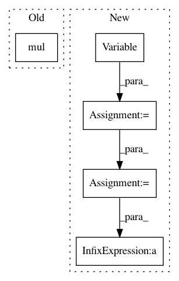

9708a6eaeed14443c9ccf26594155767fcbf83d6,gpytorch/models/exact_gp.py,ExactGP,__call__,#ExactGP#,57
Before Change
if not isinstance(test_test_covar, LazyVariable):
test_test_covar = NonLazyVariable(test_test_covar)
covar_correction = test_train_covar.matmul(self.chol)
predictive_covar = test_test_covar + CholLazyVariable(covar_correction).mul(-1)
else:
if isinstance(train_test_covar, LazyVariable):
train_test_covar = train_test_covar.evaluate()
if isinstance(test_train_covar, LazyVariable):
After Change
init_vector /= torch.norm(init_vector, 2, 0)
q_mat, t_mat = lq_object.lanczos_batch(train_train_matmul, init_vector)
self.low_rank_left = Variable(q_mat[0].matmul(t_mat[0].inverse()))
self.low_rank_right = Variable(q_mat[0].transpose(-1, -2))
self.has_computed_low_rank = True
// Calculate mean
if isinstance(full_covar, InterpolatedLazyVariable):
left_interp_indices = test_train_covar.left_interp_indices
left_interp_values = test_train_covar.left_interp_values
predictive_mean = left_interp(left_interp_indices, left_interp_values, self.alpha) + test_mean
elif isinstance(test_train_covar, LazyVariable):
predictive_mean = test_train_covar.matmul(self.alpha) + test_mean
else:
predictive_mean = torch.addmv(test_mean, test_train_covar, self.alpha)
// Calculate covar
if gpytorch.functions.fast_pred_var:
if not isinstance(test_test_covar, LazyVariable):
test_test_covar = NonLazyVariable(test_test_covar)
covar_correction_left = test_train_covar.matmul(self.low_rank_left)
covar_correction_right = test_train_covar.matmul(self.low_rank_right.transpose(-1, -2))
covar_correction_right = covar_correction_right.transpose(-1, -2)
covar_correction = MatmulLazyVariable(covar_correction_left, covar_correction_right).mul(-1)
predictive_covar = test_test_covar + covar_correction
else:
if isinstance(train_test_covar, LazyVariable):
train_test_covar = train_test_covar.evaluate()
if isinstance(test_train_covar, LazyVariable):
In pattern: SUPERPATTERN
Frequency: 3
Non-data size: 5
Instances
Project Name: cornellius-gp/gpytorch
Commit Name: 9708a6eaeed14443c9ccf26594155767fcbf83d6
Time: 2018-01-24
Author: gpleiss@gmail.com
File Name: gpytorch/models/exact_gp.py
Class Name: ExactGP
Method Name: __call__
Project Name: cornellius-gp/gpytorch
Commit Name: b4117ffdb90db3de7fa079d2e66a39d404a1a1a9
Time: 2017-09-22
Author: ruihan.wu14@gmail.com
File Name: test/lazy/mul_lazy_variable_test.py
Class Name:
Method Name: test_trace_log_det_quad_form
Project Name: cornellius-gp/gpytorch
Commit Name: b4117ffdb90db3de7fa079d2e66a39d404a1a1a9
Time: 2017-09-22
Author: ruihan.wu14@gmail.com
File Name: test/lazy/mul_lazy_variable_test.py
Class Name:
Method Name: test_exact_gp_mll